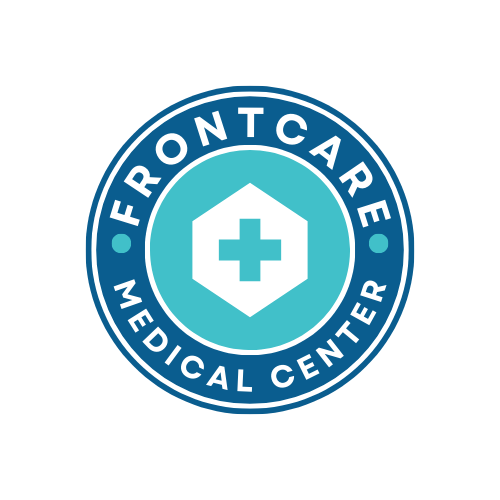

FRONTCARE MEDICAL CENTER
Safe Abortion Services - Kampala, Uganda
Safe Abortion Services - Kampala, Uganda
Leading abortion clinic in Kampala offering safe medical abortion, surgical abortion, and abortion pills. Professional, confidential reproductive healthcare with experienced medical professionals. Available 24/7 for safe abortion near you.
Comprehensive safe abortion and reproductive healthcare services by qualified medical professionals in Kampala
Safe medical abortion using FDA-approved abortion pills. Non-invasive procedure with 98% effectiveness rate for safe pregnancy termination.
Professional surgical abortion procedure performed in sterile medical environment by experienced doctors specializing in safe abortion.
Specialized care for complex cases requiring advanced medical intervention and extended support for safe late-term abortion.
Professional counseling services to help you make informed decisions about safe abortion and reproductive health options.
Comprehensive medical testing and screening to ensure your safety throughout the safe abortion procedure.
24/7 emergency medical support for urgent reproductive health needs and abortion-related complications.
We've streamlined our safe abortion process to make it as comfortable and stress-free as possible
Visit our abortion clinic for medical examination, pregnancy confirmation, and necessary tests to determine the best safe abortion treatment approach for your specific situation.

Undergo the safe abortion procedure in our sterile environment with full medical supervision, pain management, and safety protocols whether using abortion pills or surgical methods.

Receive comprehensive post-abortion care instructions and follow-up appointments to ensure your complete recovery and wellbeing after your safe abortion procedure.
Real experiences from women who trusted us with their safe abortion care in Kampala
Get answers to common questions about our safe abortion services and abortion procedures
Get professional safe abortion consultation and support in Kampala
+256 703177074
Kireka, Kampala, Uganda
Safe Abortion Services Available
Mon-Sun: 24/7 Emergency Abortion Support
Regular Hours: 7:00 AM - 10:00 PM
info@frontcaremedicalcenter.com
For urgent medical emergencies related to safe abortion or reproductive health complications, call our 24/7 emergency abortion line immediately.
+256 703 177 074